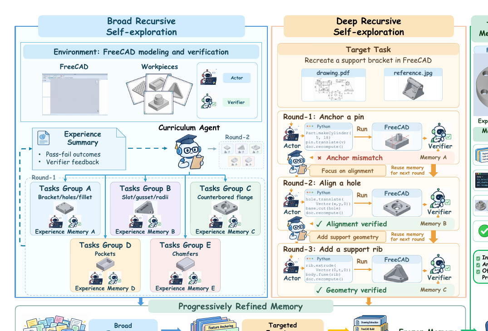
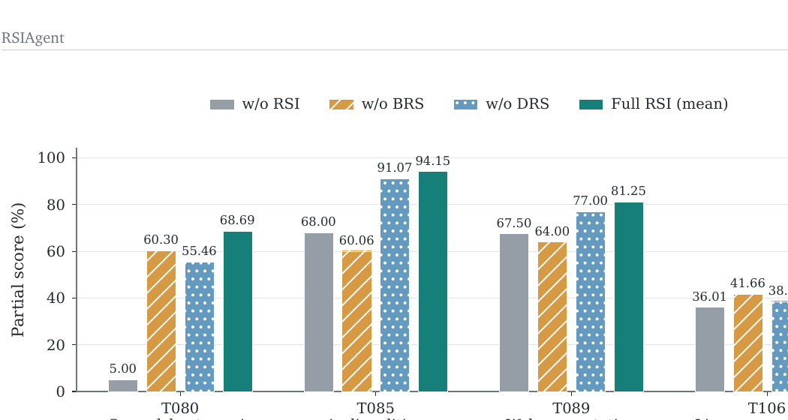
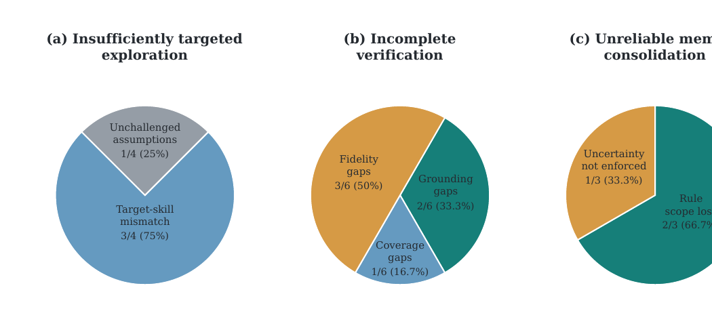

Experience Utilization
Trajectory 由外部给定；系统负责反思、提炼或修补 Skill。
RSIAgent: Autonomous Exploration for Recursive Self-improvement in New EnvironmentsSibo Zhu、Shicheng Fan、Xinyue Wang、Wenyi Wu、Kun Zhou、Biwei Huang · Aether AI / UC San Diego / UIC · 2026-09-14
RSIAgent 不只总结已经发生的经验，还会主动决定下一步练习什么。系统根据当前记忆发现知识缺口，在可重置的数字环境中安排探索，再把验证过的新经验写回记忆。
RSIAgent 最值得关注的不是多 Agent 分工，而是它让系统主动决定“下一步应该获得什么经验”。它把自进化从被动总结已有记录，推进到主动选择学习材料。
许多自进化方法要等任务执行完，才根据成功或失败记录做反思、提炼技能或验证补丁。它们默认学习材料由外部任务提供：Agent 可以改变如何解释经验，却不能决定经验从哪里来。
在陌生软件环境中，问题往往更早出现：Agent 甚至不知道自己缺少哪条环境规则，也未必会自然遇到能暴露这一缺口的任务。RSIAgent 因此根据当前记忆主动生成练习。广度探索（BRS）并行覆盖更多功能，深度探索（DRS）再围绕难例、隐藏约束和边界条件继续追问。
Trajectory 由外部给定；系统负责反思、提炼或修补 Skill。
根据当前知识缺口，主动选择下一条 Practice Experience。
显式提出假设，用受控实验与聚合证据确定策略及适用边界。
这里的“recursive self-improvement”也应精确理解。论文没有更新模型权重，也没有让改进算法自身跨代进化；递归发生在 Memory → Curriculum → Experience → Memory 的闭环中。更准确的名字是“Recursive Context / Experience Improvement”：学到了什么，会改变下一步去学什么。
论文依据：§1–3、Appendix A–B。这里对“Experience Utilization → Acquisition → Experimentation”的分层属于编辑性综合，用来区分论文已实现的能力与自然延伸。
多 Agent 分工只是实现手段；真正的自治性来自闭环：当前 Memory 决定 Curriculum，Curriculum 改变下一轮 Experience，新的 Experience 又重写 Memory。 以下按总体流程、关键机制与实现约束说明技术路线。
三类角色构成这个闭环。Curriculum 选择下一项练习；Actor 以代码控制环境，并拥有最终的记忆写权限；Verifier 与 Actor 的私有 reasoning 和 memory 隔离，直接检查执行结果、界面状态与交付物证据。收到 PASS、FAIL 或未解决的验证结果后，Actor 蒸馏程序、约束和失败教训，再与旧记忆协调冲突。
这种记忆更关注环境规则，而不是单个任务的操作步骤。它不只保存“遇到 X 就执行 A、B、C”，还记录一个操作需要哪些前提、在什么状态下有效、失败时会出现什么信号，以及哪些检查可以跨任务复用。
理论上，同一条环境规则可以服务多个下游任务。不过，论文还没有系统证明，这种规则式记忆一定优于针对具体任务编写的流程。
Task A → Procedure A。复用依赖新任务与旧任务足够相似，重点是“步骤怎么做”。
Condition × Action → Consequence。复用依赖共享环境机制，重点是“世界在什么条件下怎样响应”。
Broad → Deep 是这个闭环最简洁、也最可迁移的设计：先建立世界地图，再主动寻找地图边界。两阶段并不是两个独立模块，而是让后续精细探索拥有更可靠的先验。
BRS 在每一轮提出多个互补项目，并行执行以覆盖工具、工作流与失败模式。所有并行项目从同一份不可变记忆快照开始；完成后再按顺序把各自经验写入最新 canonical memory。主配置的名义预算是 8 个项目、最多 4 个并发，但预算在整轮结束后检查，实际项目数可能超过 8。
DRS 从目标任务出发顺序探索：每次执行和核验都会立即进入记忆，Curriculum 再根据当前失败、未确定规则或已通过但仍脆弱的环节选择下一项练习。成功后可以继续生成 contrastive exercise，失败后也可以生成区分 competing explanations 的练习；成功本身不必停止，只有课程代理认为继续练习的预期价值已经很低时才冻结记忆。

左侧 BRS 并行建立不同技能切片，中间 DRS 用目标失败逐步修正规则，右侧在环境重置后读取冻结记忆完成任务。最终评测禁用 Curriculum 和写回，因此测到的是已学经验的复用，而不是边测边学。
阅读要点：“递归”发生在任务选择—执行—验证—记忆更新的闭环里；冻结点把探索阶段与正式评测阶段分开，这是避免直接用测试分数在线优化的关键。
在作者自己的 Actor–Verifier Harness 内，加入探索与冻结记忆后，OSWorld 的提升明显、ALE 的提升较小；“超过 GPT-6”只适用于跨系统 Partial 分数，不能当作同预算、同执行框架的受控比较。 以下先说明评测设置，再结合主结果、消融与边界判断证据强度。
| Benchmark | 任务数 | 指标 | w/o RSI | RSIAgent | 变化 |
|---|---|---|---|---|---|
| OSWorld 2.0 · 0808 offline | 82 | Partial ↑ | 71.97 | 78.98 | +7.01 pt |
| Binary ↑ | 37.80 | 42.68 | +4.88 pt | ||
| Agents’ Last Exam · Near-term | 67 | Partial ↑ | 83.75 | 84.82 | +1.07 pt |
| Binary ↑ | 49.25 | 50.75 | +1.50 pt |
这组数字支持“外部记忆可提高现有 Harness 的任务完成度”，尤其是 OSWorld 的 graded partial credit 与 full-credit 成功率同时上升。但聚合方式并不是对全部任务重新运行 RSI：OSWorld 只有 41 个任务有可报告 RSI 分数，其余保留基线；ALE 由 19 个 RSI 分数与 48 个基线分数组成。新增探索还优先投向尚未满分的任务，因此这更像选择性部署收益，而不是对随机任务分布的无偏平均处理效应。
论文还在 40 个随机 GameCraft-Bench 任务上测试了另一种环境：同一个起始游戏经反复试玩、诊断和改码后，由外部评测器给出质量分。这里的意义是把“记忆复用”从办公软件扩展到可执行游戏开发，而不是证明跨任意领域通用。
| 起始游戏生成器 | Baseline | Play2Code | RSIAgent w/o RSI | Full RSIAgent |
|---|---|---|---|---|
| Codex + GPT-5.5 (high) | 52.77 | 51.05 | 57.84 | 61.28 |
| Kimi-K2.6 | 31.28 | 36.02 | 42.61 | 46.37 |
| GLM-5.3-Flash | 30.55 | 38.25 | 44.73 | 48.72 |
| Qwen3.8-27B | 41.30 | 47.67 | 53.82 | 57.46 |
来源：论文 Table 1、Table 2、Appendix C.3–C.4 与 D。游戏开发每次最多 15 轮、每轮 Actor 最多 26 次工具调用。
把近期 self-evolution 工作放在一起看，RSIAgent 的独特位置不是“更会总结 Experience”，而是把 Experience 的来源也纳入闭环；SkillCAT、Branch2Skill 与 SkillHEX 则分别更强调可靠归纳、经验效率和假设检验。
比较这些工作时，最有区分力的轴不是是否使用 Skill 或 Memory，而是谁产生学习经验、是否显式提出可证伪假设、用什么方式验证，以及最终沉淀什么 Artifact。下面的表是研究定位图，不是统一实验协议下的性能排名。
| 工作 | 核心问题 | Experience 来源 | 主动生成任务 | Hypothesis | 主要验证 | 产物 |
|---|---|---|---|---|---|---|
| EvoSkill-GUI | 部署中怎样持续修 Skill | 当前执行失败 | 否，偏 reactive | 弱 / 隐式 | Critic + 后续执行 | Evolving GUI Skill |
| SkillCAT | 怎样避免从轨迹错误归纳 | 同任务多条成功/失败轨迹 | 否 | 对比式、隐式 | 来源任务克隆回放与审计 | Validated Skill Patch |
| Branch2Skill | 怎样提高 Experience 效率 | 固定预算的 MCTS reasoning tree | Tree Search | 非显式假设 | Elite path vs sibling evidence | Skill Update |
| SkillHEX | 怎样判断 Skill 为什么失败 | Failure + executable tests | 是，诊断测试 | 显式可证伪 | Self-verification + evidence tree | Verified Skill Revision |
| Skill Self-Play / SESA | 怎样让任务与能力共同演化 | Proposer / Challenger 生成任务 | 是 | 弱，重难度课程 | Environment / task outcome | Skill + Policy / Model |
| CORAL | 怎样持续进行开放式发现 | 多 Agent 自主搜索 | 是 | 中等 / 隐式 | Evaluator | Shared Discovery Memory |
| RSIAgent | 怎样在未知 Environment 主动获得知识 | 自主环境探索 | 是 | 中等 / 隐式 | 隔离的环境 Verifier | Environment Memory |
编辑性综合。相邻工作依据各自论文与本合集解读；SkillHEX 明确把可证伪失败假设转成 executable tests，Branch2Skill 以 reasoning tree 产生更密集的 step-wise evidence。不同论文任务、模型与预算不可横向比较分数。
这些方法解决的是经验链条上的不同环节。RSIAgent 负责从环境中主动获得经验；SkillCAT 负责把经验转成更可靠的技能；Branch2Skill 关注如何用更少轨迹获得有效经验；SkillHEX 则把失败转成可检验的假设。就 RSIAgent 自身而言，四项任务的消融实验表明，广度覆盖与深度追查在这些任务上确实互补。

图中 w/o BRS 表示“从空记忆只做 DRS”，w/o DRS 表示“只保留 BRS 记忆”。T085 与 T089 上 Deep-only 低于空记忆，说明窄而少的练习可能把错误或过拟合规则写入记忆。
谨慎解读：四项任务来自已有改进记录的探索性 cohort；Full RSI 是两次历史评测均值，而 Deep-only 最多允许两个课程练习，预算并不对称。这支持“在这些任务上两阶段互补”，尚不足以证明普遍因果优越性。
为什么广度可能成为深度的前提？一种合理解释是：BRS 先提供多个程序范式、检查方式与失败边界，DRS 才能围绕目标差距做局部辨识；如果一开始就只盯目标，课程代理容易在极少样本上形成错误信念。这个解释与消融方向一致，但论文没有用等预算随机任务实验隔离“覆盖多样性”“总练习量”和“阶段顺序”三者。
附录的案例追踪比聚合分数更接近机制证据：它把某条记忆、最终操作与评分组件连起来。下面三例说明收益不是抽象的“想得更好”，而是保存了可执行的环境细节。
RSIAgent 的主要进展，是让智能体主动选择下一批经验，而不再完全依赖预先给定的任务流。论文已经证明主动探索和持久知识可以改善后续执行，但尚未把“安排练习”提升为严格的受控实验。
贡献可分为研究对象、探索机制、知识载体和经验结果四层。这里仅保留论文方法与实验能够直接支持的部分。
论文支持“主动挑选经验有用”，但中心机制仍受四类证据边界约束。它们分别影响因果归因、长期可靠性和成本判断。

案例显示，练习可能没有触及真正薄弱点，验证器也可能只检查产物是否存在。图中样本规模有限且一例可进入多个面板，适合作为故障分类，不宜解读为总体发生率。
谨慎解读：持久记忆会放大错误规则的影响，因此写入前需要独立复核，并记录适用条件、反例和不确定性。
从主动探索走向自主实验，关键不是继续增加角色，而是让每次交互服务于区分一个不确定命题。一个更严格的闭环可按“提出假设—定义变量—安排对照—多次执行—汇总证据—更新有边界的策略”推进。
在这种结构中，课程模块只负责选择值得验证的问题；多个执行者负责不同条件与随机种子；独立检查器决定证据是否足以修改知识库。这样可以把“经验多了以后改规则”转成可复核的知识生产过程。
综合判断：RSIAgent 把研究重点从“如何利用已有经验”推进到“如何主动获得下一批经验”。这一转向具有持续价值；但论文展示的仍是主动练习与知识积累，还不是能够控制变量、估计不确定性并自行证伪的实验科学智能体。
主要来源：arXiv:2609.15364v1（2026-09-14）正文与附录。本文未独立复现实验；“自主实验”部分属于明确标注的研究延伸。
↑ 返回顶部